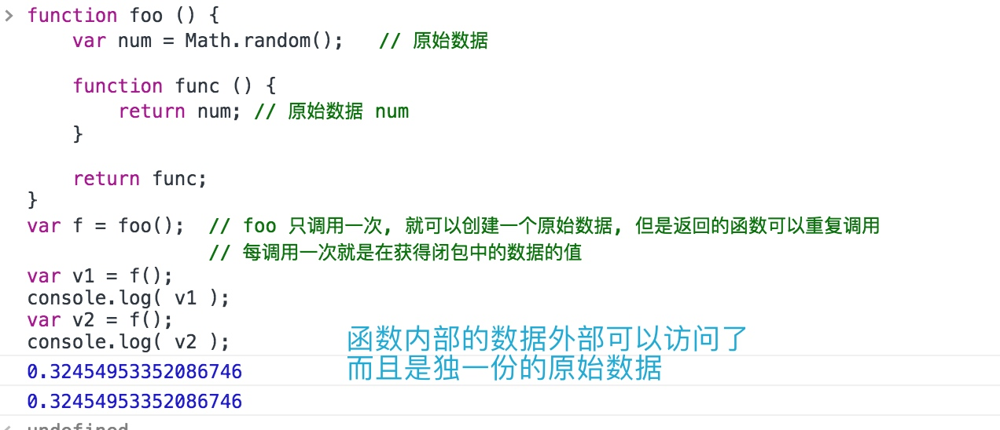
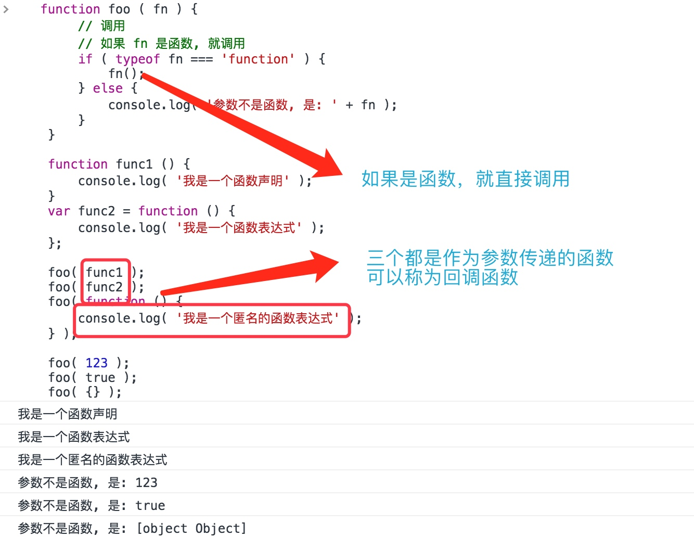
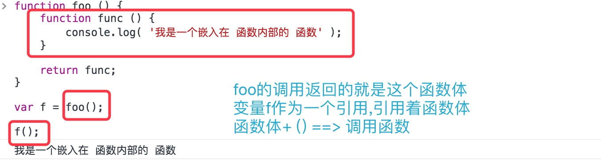
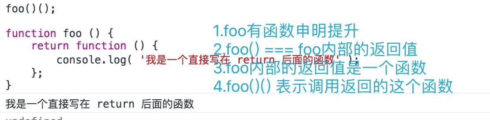

闭包
闭包的概念
什么是闭包
闭包其实就是指函数所构成的一个外部无法直接访问的区域,其具有变量作用域隔离特性.
本质:利用作用域访问规则的不可逆性,构成一个单向空间.
闭包解决的问题
因为外部环境不能直接访问函数内部的变量,所以闭包用来解决的问题就是:间接的访问函数内部被隔离的数据.
闭包的间接访问
利用函数的返回访问函数内部被隔离的原始数据
function foo () {
var num = Math.random(); // 原始数据
function func () {
return num; // 原始数据 num
}
return func;
}
var f = foo(); // foo 只调用一次, 就可以创建一个原始数据, 但是返回的函数可以重复调用
// 每调用一次就是在获得闭包中的数据的值
var v1 = f();
console.log( v1 );
var v2 = f();
console.log( v2 );

函数作为数据来使用
函数是基本的对象类型. 可以作为变量赋值, 可以作为参数使用, 也可以作为返回值使用
函数可以被赋值
// 1.赋值
function foo () {
console.log( 'Hello World' );
}
var func = foo;
// 函数体只有一个, 是将 函数的引用 赋值给了 func
// 因此 func 和 foo 指向同一个函数, 也可以调用该函数
foo();
func();
// 2.赋值扩展
function foo () {
console.log( 'Hello World' );
}
var arr = [];
arr[ 0 ] = foo();
arr[ 1 ] = foo();
arr[ 0 ]();
arr[ 1 ]();
函数可以作为参数进行传递
function f1 ( val ) {
console.log( val );
}
// 函数也是一个对象
function func () {
console.log( '我是一个函数' );
}
f1( func ); // 函数名存储的函数引用, 因此将函数作为参数传递时, 直接传递函数名即可
// 直接传递匿名函数
f1( function () {
console.log( '我是一个函数表达式, 作为参数传入' )
} );

回调函数
作为参数传递的函数叫做回调函数
回调函数可以直接调用
function foo ( fn ) {
// 调用
// 如果 fn 是函数, 就调用
if ( typeof fn === 'function' ) {
fn();
} else {
console.log( '参数不是函数, 是: ' + fn );
}
}
function func1 () {
console.log( '我是一个函数声明' );
}
var func2 = function () {
console.log( '我是一个函数表达式' );
};
foo( func1 );
foo( func2 );
foo( function () {
console.log( '我是一个匿名的函数表达式' );
} );
foo( 123 );
foo( true );
foo( {} );

函数作为返回值使用
function foo () {
function func () {
console.log( '我是一个嵌入在 函数内部的 函数' );
}
return func;
}
var f = foo();
f();

foo()();
function foo () {
return function () {
console.log( '我是一个直接写在 return 后面的函数' );
};
}

闭包的应用
操作函数中多个变量
function foo () {
var num1 = 123, num2 = 456;
return {
get_num1: function () {
return num1;
},
set_num1: function ( value ) {
num1 = value;
},
get_num2: function () {
return num2;
}
};
}
var o = foo();
console.log( 'num1 = ' + o.get_num1() );
console.log( 'num2 = ' + o.get_num2() );
o.set_num1( 789 );
console.log( 'num1 = ' + o.get_num1() );
console.log( 'num2 = ' + o.get_num2() );

利用闭包实现私有数据
function createPerson ( name, age, gender ) {
var hasChangeGender = false;
return {
get_Name: function () {
return name;
}, set_Name: function ( value ) {
name = value;
}, get_Age: function () {
return age;
}, get_Gender: function () {
return gender;
}, set_Gender: function ( value ) {
if ( hasChangeGender == false ) {
gender = value;
hasChangeGender = true;
} else {
throw new Error( '已经改变过一次性别了, 不能再修改了' );
}
}
};
}
var p1 = createPerson( '张三', 19, '男' );
console.log( 'p1.name = ' + p1.get_Name() );
console.log( 'p1.age = ' + p1.get_Age() );
console.log( 'p1.gender = ' + p1.get_Gender() );
p1.set_Name( '王二' );
p1.set_Gender( '女' );
console.log( 'p1.name = ' + p1.get_Name() );
console.log( 'p1.age = ' + p1.get_Age() );
console.log( 'p1.gender = ' + p1.get_Gender() );
p1.set_Name( '王三' );
p1.set_Gender( '男' );
闭包的核心技术
带有私有数据的函数
function foo () {
var num = 123;
return function () {
// 可以访问 num
}
}
var func = foo();
// 称 func 是一个 带有私有数据的 函数
// 称 func 带有缓存
带有私有数据的 对象
function foo () {
var num = 123;
return {
// 私有数据
}
}
var func = foo();
// 称func 是一个 带有私有数据的 对象
沙箱模式
沙箱模式:隔离的执行环境
(function () {
// 沙箱模式
// 所有的代码写在这里
})();
// 沙箱内变量外界无法直接访问,不会影响到外界,同时也是私有数据
模拟onload事件的追加与移除
var itcastload = (function () {
// 私有数据
var data = [];
// 由于要求系统在调用 load 的时候, 执行这个数组中的所有方法
// 因此需要手动实现 onload 的功能
window.onload = function () {
// 依次执行 数组中的 方法
for ( var i = 0; i < data.length; i++ ) {
data[ i ]();
}
};
return {
addEvent: function ( fn ) {
data.push( fn );
}, removeEvent: function ( fn ) {
// 删除 fn
// 遍历 data, 发现与 fn 相同的就删除
// 给定一个数组, 删除里面的元素
// arr.splice( 从第几个元素开始, 一共删除多少个元素 )
// 删除以后 arr.length 就发生变化了
// 倒过来循环
for ( var i = data.length - 1; i >= 0; i-- ) {
if ( data[ i ] === fn ) {
data.splice( i, 1 );
}
}
}
};
})();
利用闭包模拟一个缓存结构
var cache = (function () {
var data = [], max = 3;
// 去掉 var 的目的是为了使得变量编程全局变量, 可以调试查看 data 中的数据
// 开发中不允许省略 var
function cache ( key, value ) {
// 做判断, 如果超出范围, 则, 将最开始加入的 移除
// 将数组 第 0 项元素移除的 splice, shift
if ( data.length >= 3 ) {
// 需要先移除
var temp = data.shift();
delete cache[ temp ];
}
data.push( key );
cache[ key ] = value;
}
return cache;
})();
cache( 'name1', '张三' );
cache( 'name2', '李四' );
cache( 'name3', '王五' );
cache( 'name4', '找钱' );